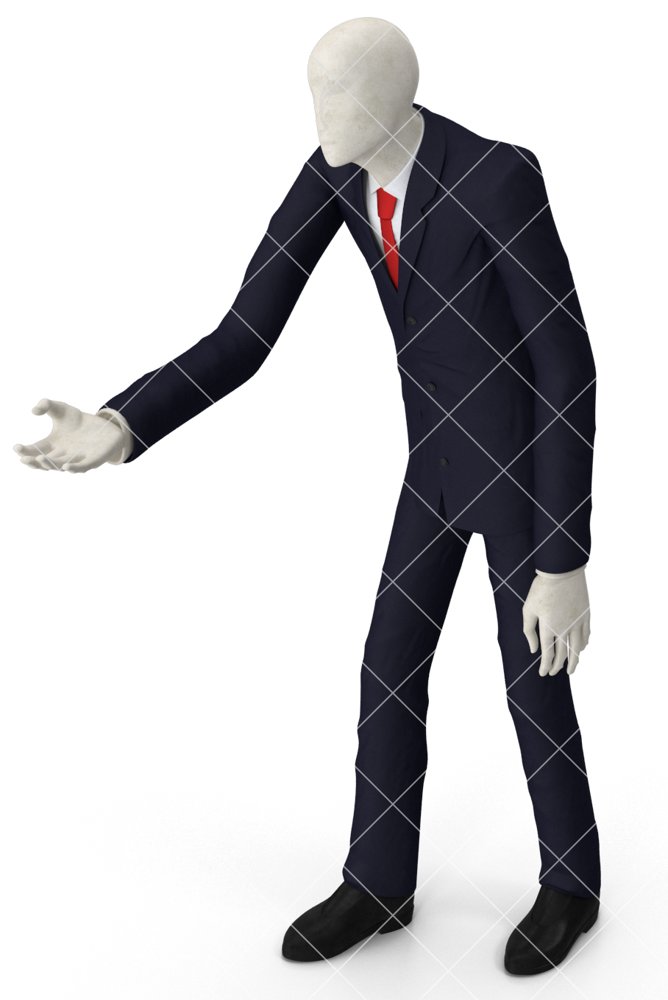

4
Animals You Were Told Not to Worry about, But you Should Worry About (AKA “Silent Killers”)

- Hamsters. Hamsters may seem like cute, cuddly, and innocuous pets – but when you learn the truth about them, you’re going to wish Floofy came with a full refund. These slow boats to Hell are the not so silent killers actually, as your death will be a drawn out, painful series of sleepless nights due to their incessant spinning on their stupid little wheels. Not many prospective hamster owners know that hamsters are nocturnal creatures, and are ill-prepared for the harsh reality that is the sounds of little hamster feet relentlessly running on a stationary wheel, night after night. In order to avoid this, keep your hamster in the garage or simply avoid them all together!
- Baby hedgehogs. Did you know that baby hedgehogs are responsible for nearly 700 fatal heart attacks annually? They are so damn cute they can stop hearts. Be aware, and stay vigilant.
- Goats. While goats have gone viral over the past few years due to their instinctive antics, not many people know that one of their more deadly instincts is their desire to be higher than others – hence their climbing of stairs, rocks, and other tall objects. Many people are dealt a slow demise by goats’ killer instinct to infiltrate their workplaces and manipulate their way from middle management to King Boss Overlord in two shakes of sheep’s tail. Once in these positions, the goats wage psychological warfare as hegemonic rulers, and starve their employees of the purpose in life that kept their hearts beating and their psyches intact.
- Daschsunds. Basically the same as the baby hedgehogs, but often only dangerous in situations of close proximity.
9
Names You Could Image Nick Cage Would Give His Offspring

- Branthony
- Cinzia
- Blossom-Rose
- Clarence
- Rod
- Salud
- Ghost-Rider
6
Ingredients for a Memorable Girls' Night!

- Bubbly drinks! Any bubbly drinks! Everyone knows that bubbles = fun!
- Dancing! Grooving with your buds is one of the best things on planet Earth – and isn’t Teri just a ridiculous fucking dancer? I mean, what the hell is UP with that pirouette/twerk move?
- Jousting! Nothing cements good memories better than being knocked from a horse while making them. You can even get crafty with it and make your own Tree of Shields.
- Alchemy! Why not practice your transmutation circles and make a killing on Etsy with the elixirs and golds you successfully enchant?
- Gossip! We ladies love to gossip and if you’re not dishing it, you will be taking it! Get closer to your lady friends by putting down your non-present lady friends and boosting your own ego at the expense of others! All in good fun of course!
- Murder! Nothing brings friends closer together than scrubbing the blood from each other’s fingernails and digging a person-sized hole.